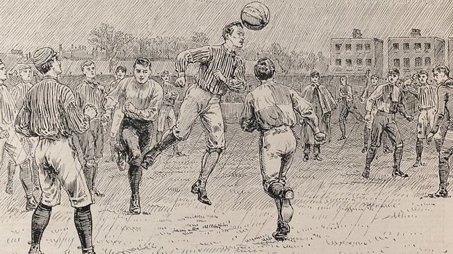
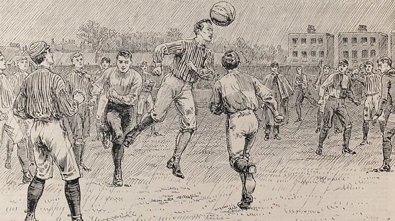
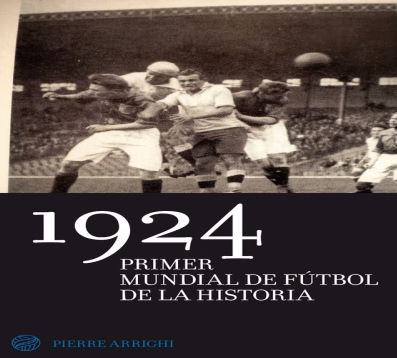
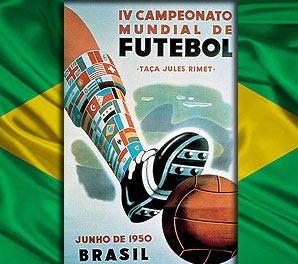
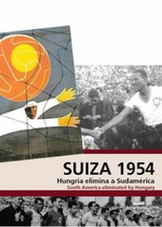

NACIMIENTO DEL FUTBOL
Fue creado el fútbol, como lo conocemos todos ahora.
En la linea de tiempo veremos todo aserca del fútbol como son cuando y como fue creada por quien, las estrategias del deporte, el entrenamiento adecuado, y la alimentación que debes hacer para realizar este deporte.
Fue creado el fútbol, como lo conocemos todos ahora.
Se reúnen todos los países para realizar una asociación entre todos.
se crea la Fifa, La Fédération Internationale de Football Association, es la institución que gobierna las federaciones de fútbol en todo el planeta.
primer evento de fútbol copa mundial.
se realiza un campeonato en la ciudad de brsail.
Hungría elimina a sudamerica y Alemania se corona campeon.
